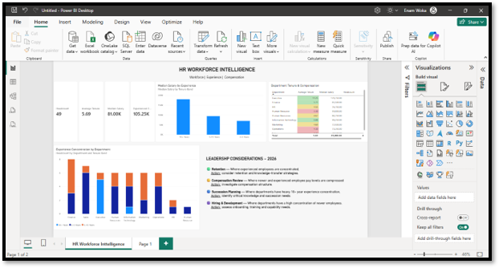
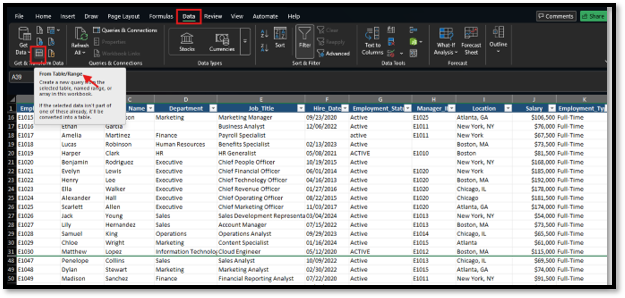
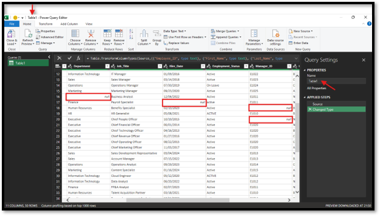
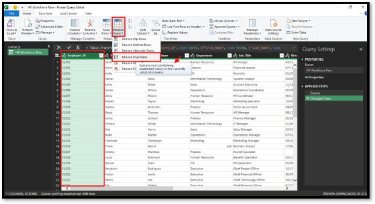
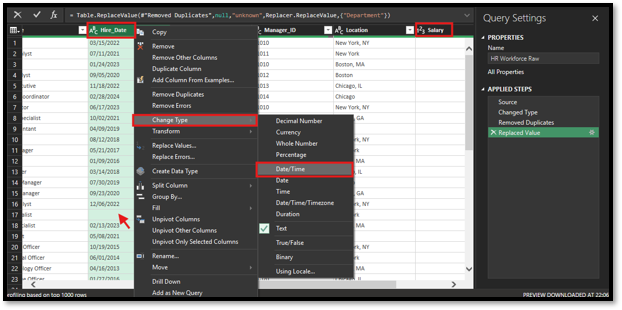
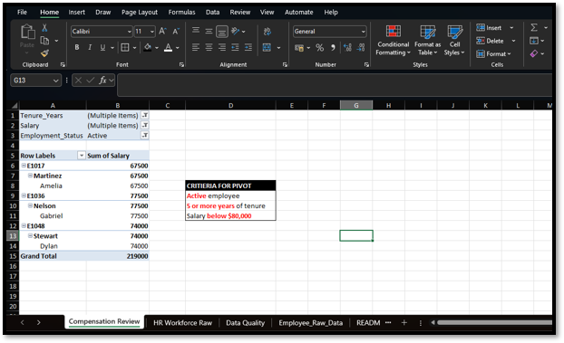
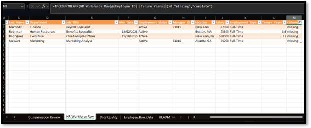
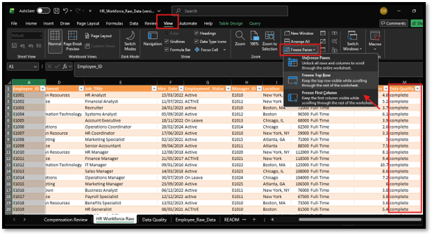

HR DATA • DATA QUALITY • ANALYTICS • POWER BI
HR Workforce Data Quality & Analytics
HR analytics project focused on improving workforce data quality, validating HR records, identifying data issues, and transforming cleaned data into workforce insights for decision-making.
WORKFORCE INTELLIGENCE DASHBOARD
HR Workforce & Compensation Dashboard
The completed dashboard consolidates workforce, compensation, tenure, and data-quality analysis into a leadership-focused view of workforce trends and potential areas of risk.

Final HR workforce and compensation dashboard — consolidated workforce, compensation, tenure, and data-quality insights.
BUSINESS PROBLEM
Improving the reliability of HR workforce data
HR decisions depend on accurate employee, organizational, compensation, and employment data. Inconsistent values, duplicate records, missing fields, and incorrect data types can affect reporting and downstream HR analysis.
The objective was to assess, clean, validate, and analyze workforce data before using it for HR reporting and leadership decision-making.
DATA QUALITY & CLEANSING
From raw HR data to validated workforce data
I used Excel and Power Query to identify and resolve common HR data-quality issues including duplicate employee records, inconsistent department values, inconsistent employment-status values, missing fields, and date-format issues.
Data types were standardized and employee tenure was calculated from hire dates to support workforce analysis.
ANALYTICAL PROCESS
Data → Validation → Reconciliation → Insight
01 — Data Assessment
Reviewed the raw workforce dataset for missing, duplicate,
inconsistent, and invalid records.
02 — Data Cleansing
Used Power Query to standardize fields, remove duplicate
employee records, correct data types, and transform dates.
03 — Validation
Validated employee records and key HR fields after transformation
to ensure the cleaned dataset was suitable for analysis.
04 — Analytics
Used Excel and Power BI to analyze workforce composition,
department distribution, tenure, and compensation patterns.
PROJECT EVIDENCE
Data Preparation, Analysis & Quality Evidence
Selected evidence from the raw-data review, Power Query transformations, compensation analysis, consolidation, and final data-quality validation.

Raw Data Quality Review
Initial review identified data-quality issues requiring cleansing and validation before analysis.

Data Cleansing
Power Query was used to identify and correct inconsistent spacing and formatting in the source data.

Duplicate Record Review
Duplicate employee records were identified and removed to improve data integrity.

Data Type Standardization
Power Query transformations standardized field data types to support reliable calculations and reporting.

Compensation Analysis
Pivot analysis was used to examine compensation patterns across the workforce.

Data Consolidation
Cleansed workforce data was consolidated into a consistent analytical dataset.

Data Quality Validation
Final validation confirmed that the dataset was ready for workforce reporting and dashboard analysis.
WORKFORCE ANALYTICS
Turning HR data into workforce insight
The cleaned dataset was used to examine workforce composition, department-level differences, employee tenure, and compensation.
Analysis focused on identifying workforce patterns that could support HR planning, compensation review, retention discussions, and leadership decision-making.
LEADERSHIP DECISION SUPPORT
Moving beyond data reporting
Rather than treating the dashboard as a collection of HR metrics, the analysis was designed to answer practical workforce questions:
• Where are workforce concentrations occurring?
• Which departments have different tenure profiles?
• How does compensation vary across the workforce?
• Where may additional data validation be required?
• What workforce patterns should HR investigate further?
TOOLS
Technology stack
SKILLS DEMONSTRATED
HR data capabilities
OUTCOME
A validated workforce dataset for HR decision-making
The project established a repeatable process for assessing, cleansing, validating, and analyzing HR workforce data before using it for reporting and decision support.